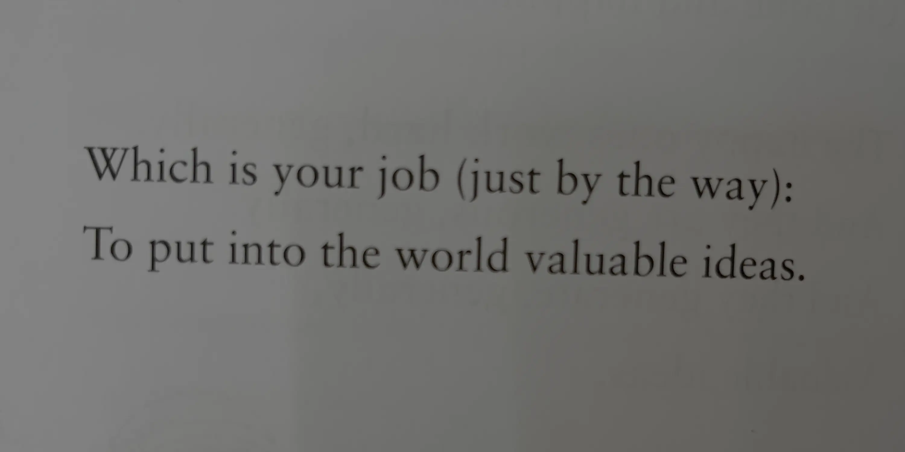

Happy Monday! Thank you for supporting the Daily Bulletin project.
- Suggest improvements to the Daily Bulletin project.
Wellbeing Inspirations
Want to contribute to a future Daily Bulletin? Share your inspirations to give everyone some morning wellbeing energy!
Quote of the Day

:)
Excerpt from "You Don't Have to Have a Dream" by Tim Michin. Shared by Debby.
Delicious Dinings
| Day | Meal | Options |
|---|---|---|
| Mon | Breakfast | Pancake / Waffle Bar 🌱 🌱 |
| Lunch | Chicken Gyros | |
| Veggie Gyros 🌱 | ||
| Dinner | Gnocchi Americano 🌱 | |
| Tue | Breakfast | Continental Counter |
| Lunch | Grispy Tofu 🌱 | |
| Spring Rolls 🌱 | ||
| Dinner | Beef Tacos | |
| Bean Tacos 🌱 |
The catering team would like to remind everyone to wash their hands before coming to the dining hall, and to refrain from eating in the servery area. Thank you!
Retrieved from Shared Weekly Menu. For reference only; accuracy not guaranteed.
Important Events
| Day | Time | Event | Location |
|---|---|---|---|
| Mon | 14:00–14:30 | Tutorial | Tutor Rooms |
| 20:00–21:00 | Pocky Challenge | Glassroom | |
| Tue | 17:30–18:45 | Sushi and Techo (featuring Raldo) | Dining Hall |
Retrieved from What's On This Week.
Today in History
- 1876 – William "Boss" Tweed, a New York City politician who had been arrested for embezzlement, was handed over to US authorities after having escaped from prison and fled to Spain.
- 1963 – The first episode of Doctor Who, the world's longest-running science fiction television show, was broadcast on BBC television, starring William Hartnell as the first incarnation of the title role.
- 1976 – Jacques Mayol became the first person to freedive to a depth of 100 metres (330 ft).
- 1996 – Ethiopian Airlines Flight 961 was hijacked, then ran out of fuel and crashed into the Indian Ocean, killing 125 of the 175 people on board.
- 2011 – Arab Spring: After months of protests in Yemen, President Ali Abdullah Saleh agreed to step down; he subsequently ceded power to Vice President Abdrabbuh Mansour Hadi in February 2012.
Retrieved from Wikipedia.